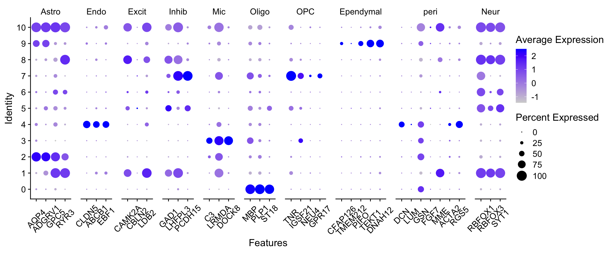
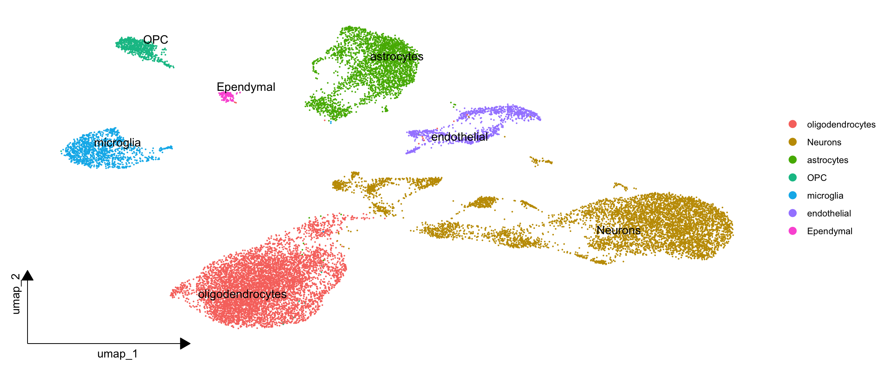

第 4 章 多样本分析
创建多样本Seurat对象
不同于单样本分析，多样本分析需要将多个样本整合到一个Seurat对象中。这里我们使用lapply函数，将多个样本的数据读取并整合到一个列表中。进而创建Searut对象。
dir="./data/multi-samples/outputs"
samples=list.files(dir)
samples
## [1] "GSM4888887_CTRL1" "GSM4888888_CTRL2" "GSM4888891_AD1" "GSM4888892_AD2"
## [5] "GSM4888895_PD1" "GSM4888896_PD2"
sceList = lapply(samples,function(pro){
#pro=samples[1]
print(pro)
tmp = Read10X(file.path(dir, pro))
if(length(tmp)==2){
ct = tmp[[1]]
}else{ct = tmp}
sce =CreateSeuratObject(counts = ct ,
project = pro ,
min.cells = 5,
min.features = 300 )
return(sce)
})
## [1] "GSM4888887_CTRL1"
## [1] "GSM4888888_CTRL2"
## [1] "GSM4888891_AD1"
## [1] "GSM4888892_AD2"
## [1] "GSM4888895_PD1"
## [1] "GSM4888896_PD2"
sce.all=merge(x=sceList[[1]],
y=sceList[ -1 ],
add.cell.ids = samples) # 每个细胞的名称前都会添加一个样本标识符前缀
sce.all <- JoinLayers(sce.all)
# 添加分组信息
phe=str_split(colnames(sce.all),'[_-]',simplify = T)
phe[1:5,]
## [,1] [,2] [,3] [,4]
## [1,] "GSM4888887" "CTRL1" "AAACCCAAGACGTCCC" "1"
## [2,] "GSM4888887" "CTRL1" "AAACCCAAGGGCCTCT" "1"
## [3,] "GSM4888887" "CTRL1" "AAACCCACAGGTATGG" "1"
## [4,] "GSM4888887" "CTRL1" "AAACCCAGTCTTGAAC" "1"
## [5,] "GSM4888887" "CTRL1" "AAACCCATCAAGCTGT" "1"
sce.all$group = phe[,1]
table(sce.all@meta.data$group)
##
## GSM4888887 GSM4888888 GSM4888891 GSM4888892 GSM4888895 GSM4888896
## 4605 2184 2503 4167 2095 5333
table(sce.all@meta.data$orig.ident)
##
## GSM4888887_CTRL1 GSM4888888_CTRL2 GSM4888891_AD1 GSM4888892_AD2
## 4605 2184 2503 4167
## GSM4888895_PD1 GSM4888896_PD2
## 2095 5333质控
第一步我们先计算关注的指标
#计算线粒体基因比例
mito_genes=rownames(sce.all)[grep("^MT-", rownames(sce.all),ignore.case = T)]
print(mito_genes) #可能是13个线粒体基因
## [1] "MT-TF" "MT-RNR1" "MT-TV" "MT-RNR2" "MT-ND1" "MT-TI" "MT-TM"
## [8] "MT-ND2" "MT-CO1" "MT-CO2" "MT-TK" "MT-ATP8" "MT-ATP6" "MT-CO3"
## [15] "MT-ND3" "MT-ND4L" "MT-ND4" "MT-TH" "MT-ND5" "MT-ND6" "MT-CYB"
## [22] "MT-TP" "MT-TL1" "MT-TD" "MT-TG"
sce.all=PercentageFeatureSet(sce.all, features = mito_genes, col.name = "percent_mito")
fivenum(sce.all@meta.data$percent_mito)
## [1] 0.0000000 0.3938158 0.9076559 2.4844720 86.9161677
#计算核糖体基因比例
ribo_genes=rownames(sce.all)[grep("^Rp[sl]", rownames(sce.all),ignore.case = T)]
print(ribo_genes[1:10])
## [1] "RPL22" "RPL11" "RPS6KA1" "RPS8" "RPS15AP11" "RPS13P2"
## [7] "RPL21P23" "RPL31P12" "RPL5" "RPL7P9"
sce.all=PercentageFeatureSet(sce.all, features = ribo_genes, col.name = "percent_ribo")
fivenum(sce.all@meta.data$percent_ribo)
## [1] 0.0000000 0.3896445 0.6633781 1.3927122 14.5989305
#计算红血细胞基因比例
Hb_genes=rownames(sce.all)[grep("^Hb[^(p)]", rownames(sce.all),ignore.case = T)]
print(Hb_genes)
## [1] "HBEGF" "HBS1L" "HBB" "HBG2" "HBM" "HBA2" "HBA1" "HBQ1"
sce.all=PercentageFeatureSet(sce.all, features = Hb_genes,col.name = "percent_hb")
fivenum(sce.all@meta.data$percent_hb)
## [1] 0.00000000 0.00000000 0.00000000 0.01954031 28.35028077过滤前可视化
#可视化细胞的上述比例情况
feats <- c("nFeature_RNA", "nCount_RNA")
p1=VlnPlot(sce.all, group.by = "orig.ident", features = feats, pt.size = 0, ncol = 2) +
NoLegend()
p1 
feats <- c("percent_mito", "percent_ribo", "percent_hb")
p2=VlnPlot(sce.all, group.by = "orig.ident", features = feats, pt.size = 0, ncol = 3, same.y.lims=T) +
scale_y_continuous(breaks=seq(0, 100, 5)) +
NoLegend()
p2

开始过滤
# 根据上述指标，过滤低质量细胞/基因
# 过滤指标1:最少表达基因数的细胞&最少表达细胞数的基因
# 一般来说，在`CreateSeuratObject`的时候已经是进行了这个过滤操作
# 如果后期看到了自己的单细胞降维聚类分群结果很诡异，就可以回过头来看质量控制环节
# 先走默认流程即可
if(F){
selected_c <- WhichCells(sce.all, expression = nFeature_RNA > 500)
selected_f <- rownames(sce.all)[Matrix::rowSums(sce.all@assays$RNA$counts > 0 ) > 3]
sce.all <- subset(sce.all, features = selected_f, cells = selected_c)
} #过滤指标2:线粒体/核糖体基因比例(根据上面的violin图)
selected_mito <- WhichCells(sce.all, expression = percent_mito < 25);length(selected_mito)
## [1] 20269
selected_ribo <- WhichCells(sce.all, expression = percent_ribo > 3);length(selected_ribo)
## [1] 1386
selected_hb <- WhichCells(sce.all, expression = percent_hb < 1 );length(selected_hb)
## [1] 20876
sce.all <- subset(sce.all, cells = selected_mito)
# sce.all.filt <- subset(sce.all.filt, cells = selected_ribo)
# sce.all.filt <- subset(sce.all.filt, cells = selected_hb)
dim(sce.all)
## [1] 28985 20269过滤后可视化
#可视化过滤后的情况
feats <- c("nFeature_RNA", "nCount_RNA")
p1_filtered=VlnPlot(sce.all, group.by = "orig.ident", features = feats, pt.size = 0,
ncol = 2) +
NoLegend()
p1_filtered
feats <- c("percent_mito", "percent_ribo", "percent_hb")
p2_filtered=VlnPlot(sce.all, group.by = "orig.ident", features = feats, pt.size = 0, ncol = 3) +
NoLegend()
p2_filtered
harmony流程
sce.all <- NormalizeData(sce.all,
normalization.method = "LogNormalize",
scale.factor = 1e4)
sce.all <- FindVariableFeatures(sce.all)
sce.all <- ScaleData(sce.all)
sce.all <- RunPCA(sce.all, features = VariableFeatures(object = sce.all))
sce.all <- RunHarmony(sce.all, "orig.ident")
sce.all <- RunUMAP(sce.all, dims = 1:15,
reduction = "harmony")
# sce.all <- RunTSNE(sce.all, dims = 1:15,
# reduction = "harmony")
names(sce.all@reductions)
## [1] "pca" "harmony" "umap"harmony使用前后区别
seuratObj <- RunUMAP(sce.all, dims = 1:15,
reduction = "pca")
DimPlot(seuratObj, reduction = "umap", group.by = "orig.ident") +
ggtitle("harmony_before")| # 未使用harmony
DimPlot(sce.all, reduction = "umap", group.by = "orig.ident") +
ggtitle("harmony_later") # 使用harmony
设置不同的分辨率，观察分群效果，进而选择最佳分辨率
apply(sce.all@meta.data[,grep("RNA_snn",colnames(sce.all@meta.data))],2,table)
## $RNA_snn_res.0.01
##
## 0 1 2 3 4 5 6
## 6970 6138 3145 1294 1154 833 735
##
## $RNA_snn_res.0.05
##
## 0 1 2 3 4 5 6 7 8 9
## 6834 5722 3145 1293 1154 834 735 358 137 57
##
## $RNA_snn_res.0.1
##
## 0 1 10 2 3 4 5 6 7 8 9
## 6832 4922 57 3145 1295 1154 834 800 735 358 137
##
## $RNA_snn_res.0.2
##
## 0 1 10 11 2 3 4 5 6 7 8 9
## 6550 4791 57 22 3121 1294 1216 1154 834 735 358 137
##
## $RNA_snn_res.0.3
##
## 0 1 10 11 12 2 3 4 5 6 7 8 9
## 6548 4768 137 83 22 2533 1293 1153 928 877 834 735 358
##
## $RNA_snn_res.0.5
##
## 0 1 10 11 12 13 14 15 16 17 18 2 3 4 5 6
## 6057 4427 522 358 259 236 166 135 67 57 22 2536 1225 1128 740 599
## 7 8 9
## 582 580 573
##
## $RNA_snn_res.0.8
##
## 0 1 10 11 12 13 14 15 16 17 18 19 2 20 21 22
## 3590 2144 569 553 522 397 285 266 265 254 225 213 2122 183 158 135
## 23 24 25 26 3 4 5 6 7 8 9
## 123 92 83 67 2062 2006 1225 801 740 605 584
##
## $RNA_snn_res.1
##
## 0 1 10 11 12 13 14 15 16 17 18 19 2 20 21 22
## 3325 2170 584 574 569 513 386 266 256 236 213 185 2114 163 136 135
## 23 24 25 3 4 5 6 7 8 9
## 114 92 83 2043 1962 1179 827 797 735 612p1_dim=plot_grid(ncol = 3,
DimPlot(sce.all, reduction = "umap", group.by = "RNA_snn_res.0.01") +
ggtitle("louvain_0.01"),
DimPlot(sce.all, reduction = "umap", group.by = "RNA_snn_res.0.5") +
ggtitle("louvain_0.05"),
DimPlot(sce.all, reduction = "umap", group.by = "RNA_snn_res.0.1") +
ggtitle("louvain_0.1"),
DimPlot(sce.all, reduction = "umap", group.by = "RNA_snn_res.0.2") +
ggtitle("louvain_0.2"),
DimPlot(sce.all, reduction = "umap", group.by = "RNA_snn_res.0.3") +
ggtitle("louvain_0.3"),
DimPlot(sce.all, reduction = "umap", group.by = "RNA_snn_res.0.5") +
ggtitle("louvain_0.5"),
DimPlot(sce.all, reduction = "umap", group.by = "RNA_snn_res.0.8") +
ggtitle("louvain_0.8"),
DimPlot(sce.all, reduction = "umap", group.by = "RNA_snn_res.1") +
ggtitle("louvain_1"));p1_dim

检查marker基因
选择需要的阈值，可视化一些marker基因辅助后续的单细胞亚群定义 这里直接选0.8
sel.clust = "RNA_snn_res.0.8"
sce.all <- SetIdent(sce.all, value = sel.clust)
table(sce.all@active.ident)
##
## 0 1 2 3 4 5 6 7 8 9 10 11 12 13 14 15
## 3590 2144 2122 2062 2006 1225 801 740 605 584 569 553 522 397 285 266
## 16 17 18 19 20 21 22 23 24 25 26
## 265 254 225 213 183 158 135 123 92 83 67可以根据经验构建自己的注释集合（可选）
gastric_cancer_markers = c('PTPRC',
'MUC2' , 'ITLN1',
'FABP1' , 'APOA1',
'CEACAM5' , 'CEACAM6',
'EPCAM', 'KRT18', 'MUC1',
'MUC6' , 'TFF2',
'PGA4' , 'PGA3',
'MUC5AC' , 'TFF1','CHGA' , 'CHGB')
Myo=c("Krt17", "Krt14", "Krt5", "Acta2", "Myl9", "Mylk", "Myh11")
Lum=c("Krt19", "Krt18", "Krt8")
Hs=c("Prlr", "Cited1", "Pgr", "Prom1", "Esr1")
AV=c("Mfge8", "Trf", "Csn3", "Wfdc18", "Elf5", "Ltf")
Lp=c("Kit", "Aldh1a3", "Cd14")
Fib=c("Col1a1", "Col1a2", "Col3a1", "Fn1")
GSE150580_breast_cancer_markers_list =list(
Myo=Myo,
Lum=Lum,
Hs=Hs,
AV=AV,
Lp=Lp,
Fib=Fib
)
macrophages=c('Adgre1', 'Cd14', 'Fcgr3')
cDCs=c('Xcr1', 'Flt3', 'Ccr7')
pDCs=c('Siglech', 'Clec10a', 'Clec12a')
monocytes=c('Ly6c2' , 'Spn')
neutrophils=c('Csf3r', 'S100a8', 'Cxcl3')
SCP1661_meyloids_markers_list =list(
macrophages=macrophages,
cDCs=cDCs,
pDCs=pDCs,
monocytes=monocytes,
neutrophils=neutrophils
)
lung_epi_markers = c('TPPP3',"SPRR3","GDPD3","SPRR1A","SPRR2A","RARRES2","TMPRSS11E",
"ASCL3","CFTR","FOXI2","1SG20","FOXI1",
"SAA4","SAA2","EFHC1","CCDC153","CCDC113","SAA1","CDC20B","FOXJ1",
"MYCL","FOXN4","CCNO",
"PIGR","BP1","MUC5A","VMO1","SCGB3A1","CYP2A13","CYP2B6","SCGB1A1",
"BCAM","KRT15","KRT5","TP63")
myeloids_markers_list1 =list(
CM=c("TTN","MYH7","MYH6","TNNT2") ,
EC=c("VWF", "IFI27", "PECAM1","MGP"),
FB=c("DCN", "C7" ,"LUM","FBLN1","COL1A2"),
MP=c("CD163", "CCL4", "CXCL8","PTPRC"),
SMC=c("ACTA2", "CALD1", "MYH11"),
Tc=c("CD3D","CD3E"),
DC1 = c( 'Clec9a', 'Xcr1', 'Wdfy4'),
DC2 = c('Itgax', 'Sirpa', 'Cd209a'),
mregDCs= c('Ccr7', 'Cd80', 'Cd200', 'Cd247') ,
hypoxia=c('Hif1a', 'Slc2a1', 'Vegfa', 'Hmox1',
'Bnip3', 'Nos2', 'Mmp2', 'Sod3',
'Cited2', 'Ldha'),
peric=c("ABCC9","PDGFRB","RGS5")
)
myeloids_markers_list2 = list(pDC = c("CLEC4C","IRF7","TCF4","GZMB"),
cDC1 = c("XCR1","CLNK","CLEC9A"),
cDC2 = c("FCER1A","HLA-DPB1","HLA-DQB1","CD1E","CD1C","CLEC10A","HLA-DQA2"),
DC3 = c("CCL19","LAMP3","IDO1","IDO2","LAD1","FSCN1","CCR7","LY75","CCL22","CD40","BIRC3","NFKB2"),
Macrophages = c("APOC1","HLA-DRB5","C1QA","C1QB"),
RTMs = c("THBS1"),#Resident tissue macrophages
Lam = c("APOE"),#Lipid associated macrophages
Monocytes = c("LYZ","HLA-DRB1","TIMP1","S100A11","CXCL8","IL1B","PTGS2","S100A9","S100A8","MMP19"),
Mono_C = c('CD14'),#Mono_CD14
Mono_F = c('FCGR3A'),#Mono_FCGR3A
Mast = c('TPSAB1' , 'TPSB2'))
Tcells_markers = c('PTPRC', 'CD3D', 'CD3E', 'CD4','CD8A',
'CCR7', 'SELL' , 'TCF7','CXCR6' , 'ITGA1',
'FOXP3', 'IL2RA', 'CTLA4','GZMB', 'GZMK','CCL5',
'IFNG', 'CCL4', 'CCL3' ,
'PRF1' , 'NKG7')
# CD4T
CD4_markers_list =list(
Tc=c("CD3D","CD3E"),
CD4=c("CD4" ),
Treg=c("TNFRSF4","BATF","TNFRSF18","FOXP3","IL2RA","IKZF2"),
naive=c("CCR7","SELL","CD5"),
Tfh=c("CXCR5","BCL6","ICA1","TOX","TOX2","IL6ST"),#滤泡辅助性T细胞
ILC=c("TNFRSF25","KRT81","LST1","AREG","LTB","CD69")
)
# CD8T
CD8_markers_list1 =list(
CD8=c("CD8A","CD8B"),
TN_TCM=c("CCR7","SELL","TCF7","LEF1"),
TEM=c("GZMK" ),
TEFF=c("TBX21","FCGR3A","FGFBP2"),
TRM=c("XCL1","XCL2","ITGAE","CD69"),
IEL_T = c("TMIGD2"),
yT1c=c("GNLY","PTGDS","GZMB","TRDC"),
yT2c=c("TMN1","HMGB2","TYMS"),
MAIT_T = c("SLC4A10")
)
CD8_markers_list2 =list(
CD8T=c("CD8A","CD8B"),
MAIT=c("ZBTB16","NCR3","RORA"),
ExhaustedCD8T=c("LAG3","TIGIT","PDCD1","HAVCR2","CTLA4"),
EffMemoryCD8=c("EOMES","ITM2C"),
Resting_NK=c("XCL1","XCL2","KLRC1"),
Cytotoxic_NK=c("CX3CR1","FGFBP2","FCGR3A","KLRD1"),
Pre_exhausted=c("IFNG","PRF1","GNLY","GZMA","NKG7","GZMK")
)
cd4_and_cd8T_markers_list =list(
naive=c("CCR7","SELL","TCF7","IL7R","CD27","CD28","LEF1","S1PR1"),
CD8Trm=c("XCL1","XCL2","MYADM"),
NKTc=c("GNLY","GZMA"),
Tfh=c("CXCR5","BCL6","ICA1","TOX","TOX2","IL6ST"),
th17=c("IL17A","KLRB1","CCL20","ANKRD28","IL23R","RORC","FURIN","CCR6","CAPG","IL22"),
CD8Tem=c("CXCR4","GZMH","CD44","GZMK"),
Treg=c("FOXP3","IL2RA","TNFRSF18","IKZF2"),
naive=c("CCR7","SELL","TCF7","IL7R","CD27","CD28"),
CD8Trm=c("XCL1","XCL2","MYADM"),
MAIT=c("KLRB1","ZBTB16","NCR3","RORA"),
yT1c=c("GNLY","PTGDS","GZMB","TRDC"),
yT2c=c("TMN1","HMGB2","TYMS"),
yt=c("TRGV9","TRDV2")
)
# CD20 (MS4A1)表达于除plasma B 之外的所有B，很关键的区分naive 和plasma的marker
# SDC1 = CD138 plasma B （接受抗原，可表达抗体）
Bcels_markers_list = list(
All = c('MS4A1','SDC1','CD27','CD38','CD19', 'CD79A'),
GC_B = c('IL4R','TCL1A','LRMP','SUGCT'),
IGA_plasm_B= c ( 'IGHA1'),
IGG_plasm_B= c ( 'IGHG1')
)
Hepatic_stellate_markers_list =list(
qHSC=c("Lrat","Ecm1","Angptl6","Vipr1" ),
S1=c("Ccl2" ,"Cxcl10" ,"Cxcl1" ,"Ccl7" ),
S2=c("Acta2" ,"Tpm1" ,"Vim" ,"Tagln","Tnc","Tpm2"),
S3=c("Col1a1","Col1a2","Col3a1" ,"Lox","Lum" )
)
# arteries (HEY1, IGFBP3), capillaries (CD36, CA4), veins (ACKR1) and
# lymphatic ECs (LECs; CCL21, PROX1).
stromal_markers = c('TEK',"PTPRC","EPCAM","PDPN",
"PECAM1",'PDGFRB',"PLVAP",'PROX1','ACKR1','CA4','HEY1',
'CSPG4','GJB2', 'RGS5','ITGA7',
'ACTA2','RBP1','CD36',
'ADGRE5','COL11A1','FGF7', 'MME')
last_markers = c('PTPRC', 'CD3D', 'CD3E', 'CD4','CD8A',
'CD19', 'CD79A', 'MS4A1' ,
'IGHG1', 'MZB1', 'SDC1',
'CD68', 'CD163', 'CD14',
'TPSAB1' , 'TPSB2', # mast cells,
'RCVRN','FPR1' , 'ITGAM' ,
'C1QA', 'C1QB', # mac
'S100A9', 'S100A8', 'MMP19',# monocyte
'FCGR3A',
'LAMP3', 'IDO1','IDO2',## DC3
'CD1E','CD1C', # DC2
'KLRB1','NCR1', # NK
'FGF7','MME', 'ACTA2', ## human fibo
'GJB2', 'RGS5',
'DCN', 'LUM', 'GSN' , ## mouse PDAC fibo
'MKI67' , 'TOP2A',
'PECAM1', 'VWF', ## endo
"PLVAP",'PROX1','ACKR1','CA4','HEY1',
'EPCAM' , 'KRT19','KRT7', # epi
'FYXD2', 'TM4SF4', 'ANXA4',# cholangiocytes
'APOC3', 'FABP1', 'APOA1', # hepatocytes
'Serpina1c',
'PROM1', 'ALDH1A1' )
markers = c('gastric_cancer_markers','lung_epi_markers',
'Tcells_markers',
'stromal_markers',
'last_markers' )
markers_list <- c(
'GSE150580_breast_cancer_markers_list' ,
'SCP1661_meyloids_markers_list' ,
'myeloids_markers_list1' ,
'myeloids_markers_list2' ,
'CD4_markers_list' ,
'CD8_markers_list1' ,
'CD8_markers_list2' ,
'cd4_and_cd8T_markers_list' ,
'Bcels_markers_list' ,
'Hepatic_stellate_markers_list'
)设置物种
if(sp == 'human') {
# 创建一个列表来存储所有的DotPlot图
plot_list1 <- lapply(markers, function(x) {
genes_to_check <- str_to_upper(get(x))
plot1 <- DotPlot(sce.all, features = genes_to_check) +
coord_flip() +
theme(axis.text.x = element_text(angle = 45, hjust = 1))
# 如果需要保存图形，可以取消注释以下行
# h = length(genes_to_check) / 6 + 4
# ggsave(paste('check_for_', x, '.pdf'), height = h)
return(plot1) # 返回图形对象
})
plot_list2 <- lapply(markers_list, function(x) {
genes_to_check <- lapply(get(x), str_to_upper)
dup <- names(table(unlist(genes_to_check)))[table(unlist(genes_to_check)) > 1]
genes_to_check <- lapply(genes_to_check, function(x) x[!x %in% dup])
plot2 <- DotPlot(sce.all, features = genes_to_check) +
theme(axis.text.x = element_text(angle = 45, hjust = 1))
# 如果需要保存图形，可以取消注释以下行
# w = length(unique(unlist(genes_to_check))) / 5 + 7
# ggsave(paste('check_for_', x, '.pdf'), width = w)
return(plot2) # 返回图形对象
})
last_markers_to_check <<- str_to_upper(last_markers)
# 打印所有的图形
plot_grid(plotlist = c(plot_list1, plot_list2), ncol = 3)
} else if(sp == 'mouse') {
# 创建一个列表来存储所有的DotPlot图
plot_list1 <- lapply(markers, function(x) {
genes_to_check <- str_to_title(get(x))
plot1 <- DotPlot(sce.all, features = genes_to_check) +
coord_flip() +
theme(axis.text.x = element_text(angle = 45, hjust = 1))
# 如果需要保存图形，可以取消注释以下行
# h = length(genes_to_check) / 6 + 4
# ggsave(paste('check_for_', x, '.pdf'), height = h)
return(plot1) # 返回图形对象
})
plot_list2 <- lapply(markers_list, function(x) {
genes_to_check <- lapply(get(x), str_to_title)
dup <- names(table(unlist(genes_to_check)))[table(unlist(genes_to_check)) > 1]
genes_to_check <- lapply(genes_to_check, function(x) x[!x %in% dup])
plot2 <- DotPlot(sce.all, features = genes_to_check) +
theme(axis.text.x = element_text(angle = 45, hjust = 1))
# 如果需要保存图形，可以取消注释以下行
# w = length(unique(unlist(genes_to_check))) / 5 + 6
# ggsave(paste('check_for_', x, '.pdf'), width = w)
return(plot2) # 返回图形对象
})
last_markers_to_check <<- str_to_title(last_markers)
# 打印所有的图形
plot_grid(plotlist = c(plot_list1, plot_list2), ncol = 3)
} else {
print('we only accept human or mouse')
}
DotPlot(sce.all , features = last_markers_to_check ) +
coord_flip() +
theme(axis.text.x=element_text(angle=45,hjust = 1))|
DimPlot(sce.all, reduction = "umap",raster = F,
label = T,repel = T)
亚群命名
我们找到合适的marker基因后就可以进一步去可视化（我的理解是拿这些图在文章中展示）， 判断单细胞亚群的生物学名字。这里我们直接使用已经定义好的名字。
# 这里只是为了展示代码，就拿0.1分辨率的结果来展示
colnames(sce.all@meta.data)
## [1] "orig.ident" "nCount_RNA" "nFeature_RNA" "group"
## [5] "percent_mito" "percent_ribo" "percent_hb" "RNA_snn_res.0.01"
## [9] "seurat_clusters" "RNA_snn_res.0.05" "RNA_snn_res.0.1" "RNA_snn_res.0.2"
## [13] "RNA_snn_res.0.3" "RNA_snn_res.0.5" "RNA_snn_res.0.8" "RNA_snn_res.1"
DimPlot(sce.all, group.by = "RNA_snn_res.0.1")
astrocytes = c("AQP4", "ADGRV1", "GPC5", "RYR3")
endothelial = c("CLDN5", "ABCB1", "EBF1")
excitatory = c("CAMK2A", "CBLN2", "LDB2")
inhibitory = c("GAD1", "LHFPL3", "PCDH15")
microglia = c("C3", "LRMDA", "DOCK8")
oligodendrocytes = c("MBP", "PLP1", "ST18")
OPC='Tnr,Igsf21,Neu4,Gpr17'
Ependymal='Cfap126,Fam183b,Tmem212,pifo,Tekt1,Dnah12'
pericyte=c( 'DCN', 'LUM', 'GSN' ,'FGF7','MME', 'ACTA2','RGS5')
Neurons= c("RBFOX1", "RBFOX3", "SYT1")
gene_list = list(
Astro = astrocytes,
Endo = endothelial,
Excit = excitatory,
Inhib = inhibitory,
Mic = microglia,
Oligo = oligodendrocytes,
OPC= str_to_upper(trimws(strsplit(OPC,',')[[1]])),
Ependymal= str_to_upper(trimws(strsplit(Ependymal,',')[[1]])) ,
peri = pericyte ,
Neur = Neurons
)
gene_list = lapply(gene_list, function(x){
unique(c(str_to_title(x), str_to_upper(x)))
})
gene_list
## $Astro
## [1] "Aqp4" "Adgrv1" "Gpc5" "Ryr3" "AQP4" "ADGRV1" "GPC5" "RYR3"
##
## $Endo
## [1] "Cldn5" "Abcb1" "Ebf1" "CLDN5" "ABCB1" "EBF1"
##
## $Excit
## [1] "Camk2a" "Cbln2" "Ldb2" "CAMK2A" "CBLN2" "LDB2"
##
## $Inhib
## [1] "Gad1" "Lhfpl3" "Pcdh15" "GAD1" "LHFPL3" "PCDH15"
##
## $Mic
## [1] "C3" "Lrmda" "Dock8" "LRMDA" "DOCK8"
##
## $Oligo
## [1] "Mbp" "Plp1" "St18" "MBP" "PLP1" "ST18"
##
## $OPC
## [1] "Tnr" "Igsf21" "Neu4" "Gpr17" "TNR" "IGSF21" "NEU4" "GPR17"
##
## $Ependymal
## [1] "Cfap126" "Fam183b" "Tmem212" "Pifo" "Tekt1" "Dnah12" "CFAP126"
## [8] "FAM183B" "TMEM212" "PIFO" "TEKT1" "DNAH12"
##
## $peri
## [1] "Dcn" "Lum" "Gsn" "Fgf7" "Mme" "Acta2" "Rgs5" "DCN" "LUM"
## [10] "GSN" "FGF7" "MME" "ACTA2" "RGS5"
##
## $Neur
## [1] "Rbfox1" "Rbfox3" "Syt1" "RBFOX1" "RBFOX3" "SYT1" p1=DotPlot(sce.all, assay = "RNA", features = gene_list,
group.by = 'RNA_snn_res.0.1') +
theme(axis.text.x = element_text(angle = 45,
vjust = 0.5, hjust=0.5));p1
根据最终的可视化图，我们就可以手动的给亚群命名了。
sce.all
## An object of class Seurat
## 28985 features across 20269 samples within 1 assay
## Active assay: RNA (28985 features, 2000 variable features)
## 3 layers present: counts, data, scale.data
## 3 dimensional reductions calculated: pca, harmony, umap
dim(sce.all)
## [1] 28985 20269
sel.clust = "RNA_snn_res.0.1"
sce.all <- SetIdent(sce.all, value = sel.clust)
res_len <- table(sce.all@active.ident) %>% length();res_len
## [1] 11
celltype=data.frame(ClusterID=(0:(res_len-1)),
celltype= (0:(res_len-1)))# 自定义细胞亚群
celltype[celltype$ClusterID %in% c(2),2]='astrocytes'
celltype[celltype$ClusterID %in% c(4),2]='endothelial'
celltype[celltype$ClusterID %in% c(3),2]='microglia'
celltype[celltype$ClusterID %in% c(0),2]='oligodendrocytes'
celltype[celltype$ClusterID %in% c( 7 ),2]='OPC'
celltype[celltype$ClusterID %in% c( 1,5,6,8,10 ),2]='Neurons'
celltype[celltype$ClusterID %in% c( 9 ),2]='Ependymal'
head(celltype)
## ClusterID celltype
## 1 0 oligodendrocytes
## 2 1 Neurons
## 3 2 astrocytes
## 4 3 microglia
## 5 4 endothelial
## 6 5 Neurons
table(celltype$celltype)
##
## astrocytes endothelial Ependymal microglia
## 1 1 1 1
## Neurons oligodendrocytes OPC
## 5 1 1
sce.all@meta.data$celltype = "NA"
for(i in 1:nrow(celltype)){
sce.all@meta.data[which(sce.all@meta.data[[sel.clust]] == celltype$ClusterID[i]),'celltype'] <- celltype$celltype[i]}
Idents(sce.all)=sce.all$celltype
table(sce.all@active.ident)
##
## oligodendrocytes Neurons astrocytes OPC
## 6832 6971 3145 735
## microglia endothelial Ependymal
## 1295 1154 137最后我们就可以可视化我们的命名效果了。
DimPlot(sce.all, reduction = "umap",raster = F,
label = T,repel = T) +
theme_dr(xlength = 0.22, ylength = 0.22, arrow = grid::arrow(length = unit(0.15, "inches"), type = "closed"))+
theme(panel.grid = element_blank())
保存Seurat对象以便后续分析